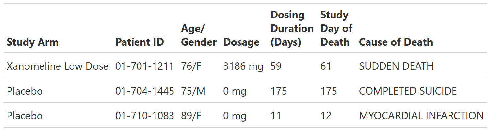

{kind=link}

All Individual Subject Deaths, Safety Population, Pooled Analysis (or Trial X)
FDA Table 09
table
FDA
safety
adverse events
FDA IG Shell
Programming Notes
Background and Instructions
Table 9: All Individual Subject Deaths provides a list of all subject deaths from the AE and disposition datasets. AEs with an outcome of death from AE datasets and subjects who died due to natural causes are only listed in the disposition datasets. The trial day of death below shows the date of death, not the date of onset of SAE leading to death.
Customization
After analyzing the initial presentation of Table 9, the clinical reviewer may discuss with the CDS whether an additional column for investigator’s assessment of relatedness or clinical reviewer’s assessment of relatedness is desired. The clinical reviewer may also request from the CDS a graphical subject profile for subjects who died.
Output
Code
# FDA TABLE 09 ---------------------------------------------------------------
# Self-contained template. Run top-to-bottom to build the objects below.
# Used by tests via run_template() and published in the catalog.
library(dplyr)
library(gtsummary)
library(crane)
adae <- pharmaverseadam::adae
adex <- pharmaverseadam::adex
# Pre-processing --------------------------------------------
# deaths
adae <- adae |>
filter(
# safety population
SAFFL == "Y",
# deaths
DTHFL == "Y"
) |>
# select variables from `adae` to include in final result
select(USUBJID, TRT01A, AGE, SEX, DTHADY, DTHCAUS) |>
# keep one row per unique ID
distinct(USUBJID, DTHCAUS, DTHADY, .keep_all = TRUE)
# dosing
adex <- adex |>
filter(
# safety population
SAFFL == "Y",
# total dosages
PARAMCD == "TDOSE"
) |>
# select variables from `adex` to include in final result
select(USUBJID, AVAL, TRTSDT, TRTEDT) |>
mutate(
# derive dosage duration
DOSDUR = (TRTEDT - TRTSDT + 1) |> as.character()
)
# combine all data
data <- left_join(adae, adex, by = "USUBJID") |>
select(TRT01A, USUBJID, AGE, SEX, DOSDUR, DTHADY, DTHCAUS) |>
arrange()
# Table 9 is one of the FDA IG's subject-level listings (titled "All
# Individual Subject Deaths"), so it uses tbl_listing() rather than a summary
# constructor. The other IG listings (Tables 39, 41, 42, 54, 55) are not in
# the catalog yet; when added they should use tbl_listing() too.
tbl <- crane::tbl_listing(data) |>
# set table header labels
modify_header(
TRT01A = "**Treatment Arm**",
USUBJID = "**Unique \n Subject ID**",
AGE = "**Age**",
SEX = "**Sex**",
DOSDUR = "**Dosing** \n **Duration** \n **(Days)**",
DTHADY = "**Study** \n **Day of** \n **Death**",
DTHCAUS = "**Cause of Death**"
) |>
# align all columns left
modify_column_alignment(everything(), align = "left")
# A listing has no ARD; the full unformatted dataset (`data`) is the result.This table is a listing, so there is no ARD. The underlying dataset is the result.